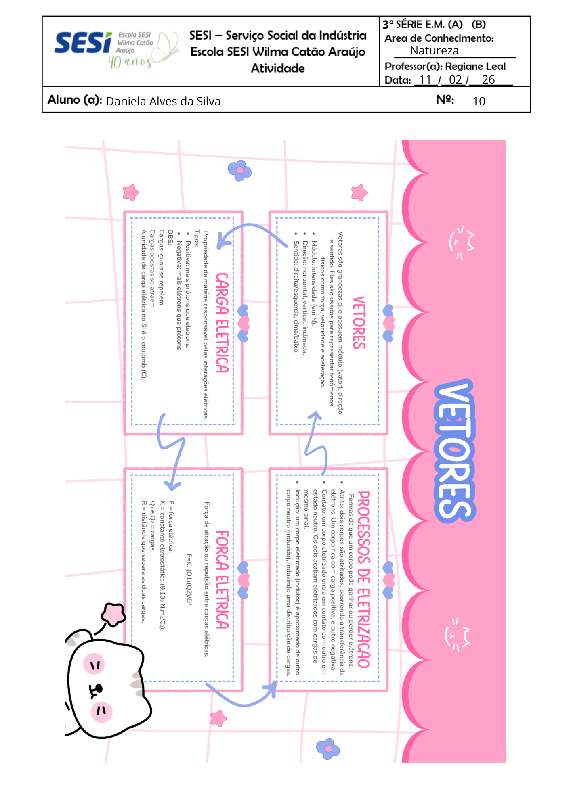
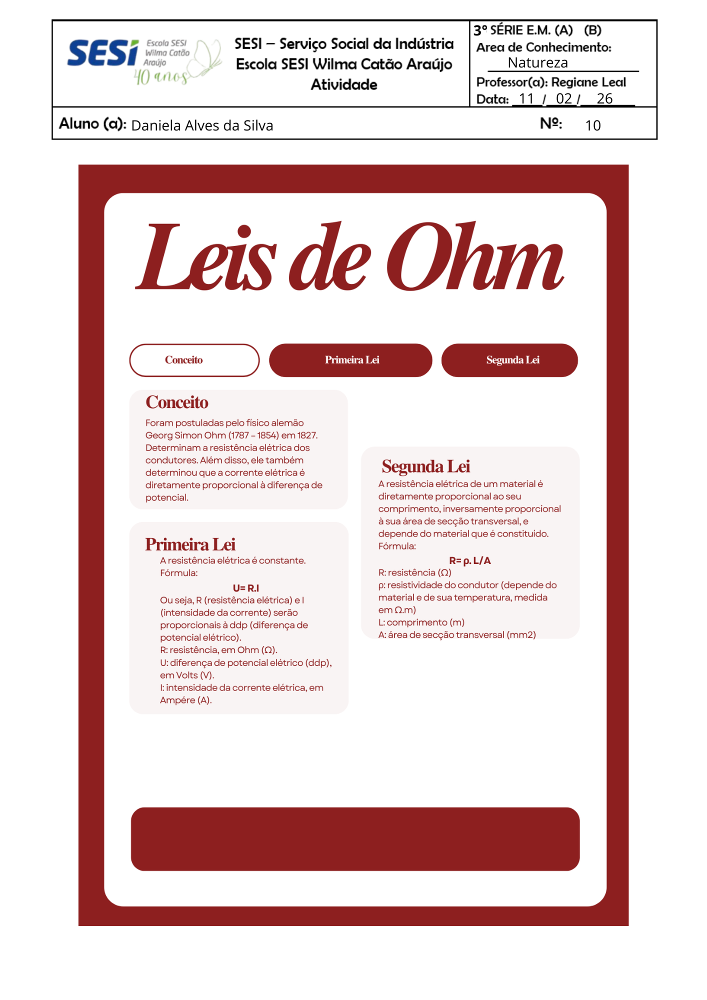
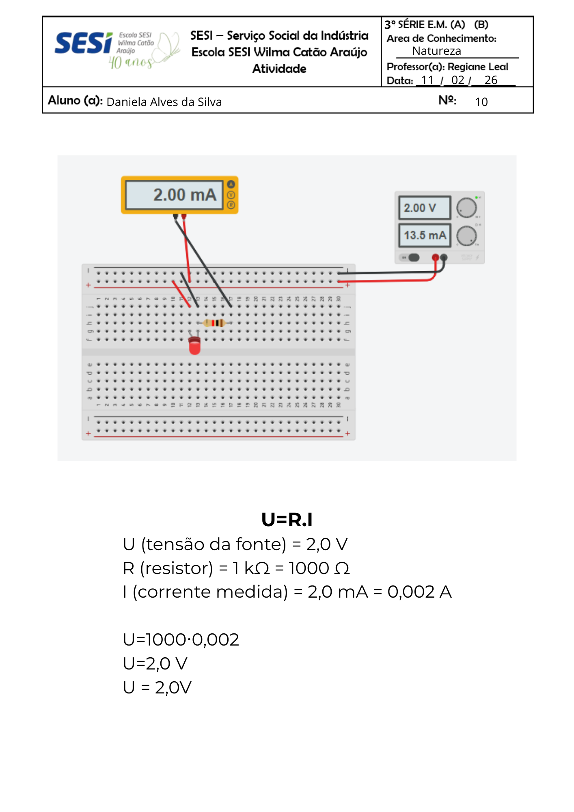
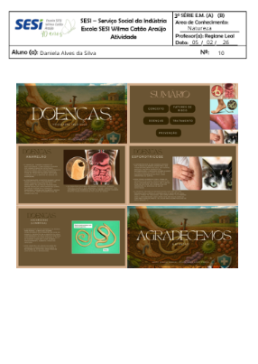
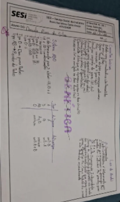

Mapa mental sobre a classificação das cadeias carbônicas (28/01)

Mapa mental sobre a diferença entre mitose e meiose (05/02)

Mapa mental sobre vetores (11/02)

Resumo sobre a 1ª e 2ª Lei de Ohm (11/02)

Projeto no Tinkercad: criar um circuito elétrico e explicar como ele funciona com base na Lei de Ohm (11/02)

Slides apresentados em 26/02

Mapa mental sobre os conceitos genéticos (25/03)
